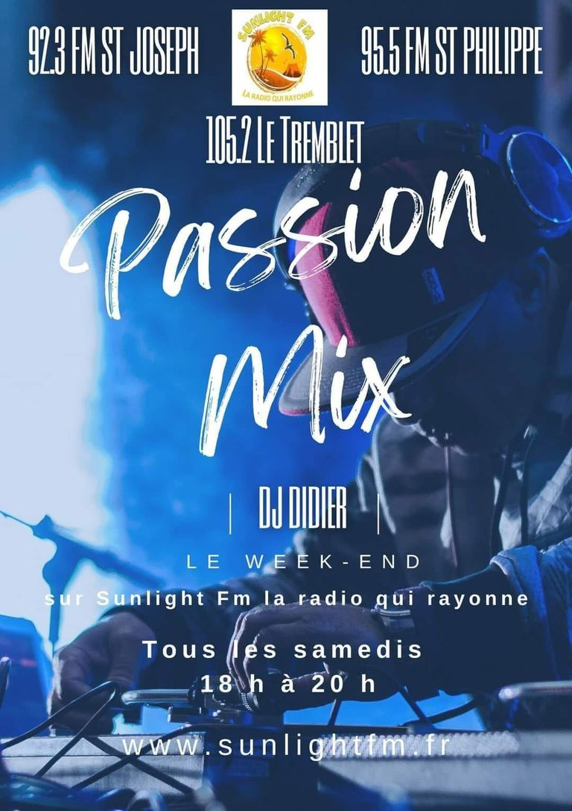
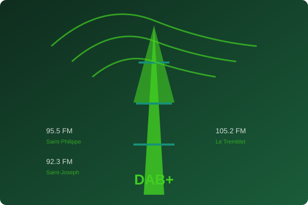
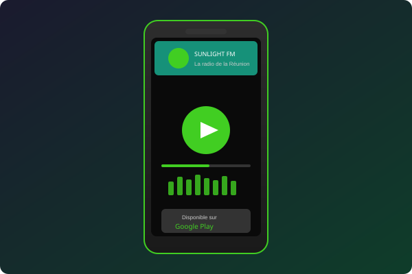
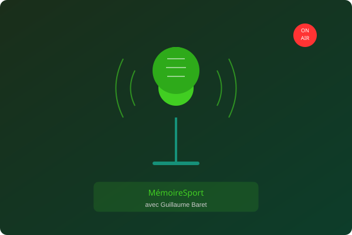
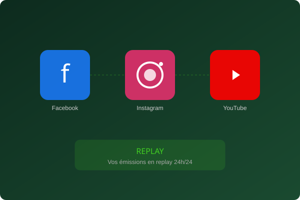
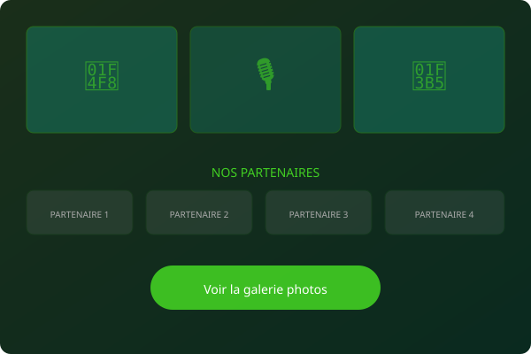

95.5
Saint-Philippe
Grand Sud de la Réunion
Émissions locales, invités, replay et une couverture DAB+ sur le Grand Sud, l'Ouest et le Nord de la Réunion. La radio de chez vous, partout.

SunLight FM est une radio locale diffusée en DAB+ dans le Grand Sud, l'Ouest et le Nord de la Réunion. Elle propose une programmation variée avec des émissions, des invités et une forte présence sur les réseaux sociaux.
Retrouvez SunLight FM sur les fréquences FM de votre région. Une couverture étendue pour que vous ne manquiez jamais vos émissions préférées, où que vous soyez sur l'île.
Grand Sud de la Réunion
Grand Sud — Côte volcanique
Grand Sud — Hauts et littoral
Couverture numérique étendue


Téléchargez l'application SunLight FM sur Google Play pour écouter la radio partout, accéder aux replays et ne jamais manquer vos émissions préférées.
Streaming live de SunLight FM 24h/24, où que vous soyez.
Réécouter vos émissions préférées à la demande.
Alertes pour les émissions et événements spéciaux.
Découvrez nos émissions phares comme MémoireSport avec Guillaume Baret, et suivez nos invités locaux qui animent la radio au quotidien.
Avec Guillaume Baret
L'émission incontournable du sport réunionnais. Retours sur les événements sportifs locaux, interviews d'athlètes et mémoire du sport de l'île.
Les voix de la Réunion
Des personnalités réunionnaises partagent leur vision, leurs projets et leurs engagements pour l'île. Culture, entrepreneuriat, social et bien plus.
Événements & sorties
Toute l'actualité des événements, concerts, festivals et sorties culturelles sur l'île de la Réunion.


Suivez SunLight FM sur les réseaux sociaux pour ne rien manquer et profitez des replays de vos émissions préférées en accès libre.
Vous avez manqué une émission ? Pas de panique. Retrouvez l'intégralité de vos émissions préférées en replay sur notre page YouTube et nos réseaux sociaux, disponibles 24h/24.
Accéder au replayExplorez notre galerie photos et découvrez nos partenaires qui soutiennent SunLight FM et contribuent au rayonnement de la radio sur toute l'île.

En studio
Événements
La Réunion
DAB+
🤝
Partenaire local 1
🏢
Partenaire local 2
⭐
Partenaire local 3
🌟
Partenaire local 4